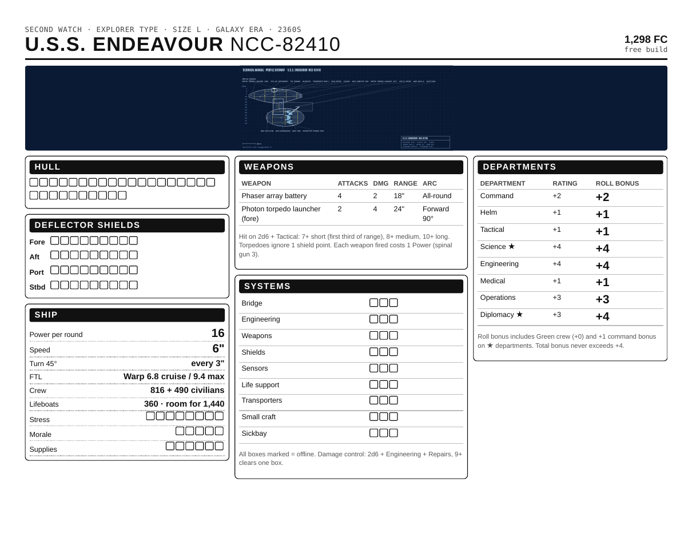
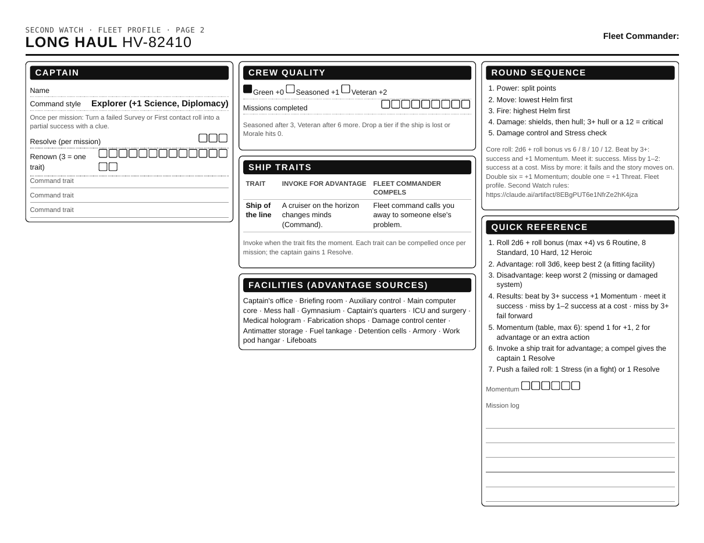
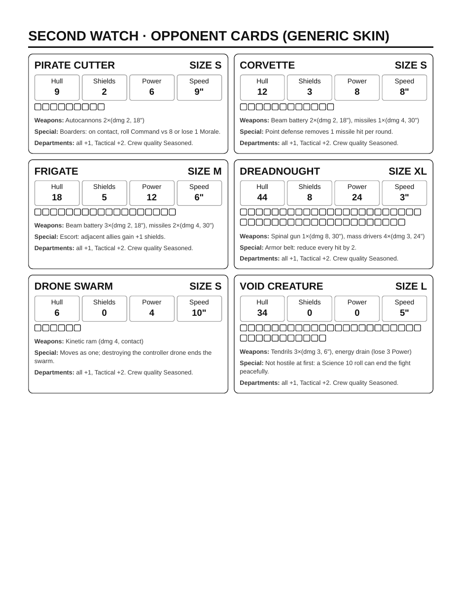

What is Second Watch?
Every space epic follows a legendary crew. But for every famous starship, hundreds more are out there doing the work: the convoy that reached the colony a week after the crisis, the patrol that found the wreckage, the picket ship holding a quiet border while the great battle happened somewhere else.
Second Watch is a tabletop game about those ships, and you are their captains.
You design your ship from the keel up in Second Watch: Drydock: its hull, its drives and weapons, every deck, laboratory, cargo hold and shuttlebay. You watch it built and launched. Then you print its record sheet and bring it to the table, where one player, the Fleet Commander, hands your task force its orders. Play in a setting of your own, in the default frontier these pages use for examples, or in the universe of your favorite stories.
What makes it different
- Your ship is your character sheet. Every number you roll comes from the design. A survey ship with a big lab gets better at surveys; a gunship without a sickbay struggles in a medical emergency. Choices you made in the shipyard show up at the table.
- You are the captain. You decide what your crew attempts, and how much risk to take. Your crew are skilled professionals at their posts; the dice say whether they pull it off.
- One roll does everything. Two six-sided dice plus a bonus from your sheet, against a target number. You can learn it in ten minutes.
- History is the weather. Campaigns are set in the gaps around the big events of your setting. You will never stop the great battle, but you might be the ship that brings its survivors home.
What a session looks like
A session runs two to three hours. The Fleet Commander reads the orders. The captains plan, then play through three to five scenes: a navigation hazard, a survey, a standoff, an away mission. Each scene comes down to a captain's choice and a roll. If talking fails, the ships go on the table for a skirmish.
What you need
- A ship for each captain, built in Drydock, and its printed record sheet (two pages)
- Three six-sided dice per player, and pencils
- One person to be the Fleet Commander (or the solo tables in Chapter 5)
- For battles: a table about 3 × 3 ft, a ruler in inches, and miniatures or tokens. Drydock exports your ship as 3D print files; the 50 mm size suits the table.
How this book is organized
- What is Second Watch? You are here.
- Playing in ten minutes. The core roll, with an example of play.
- Your ship. How Drydock turns a design into the numbers on your record sheet.
- Captains and crews. Command styles, Resolve, Renown, crew quality, and the four ways to play.
- Missions. Scenes, requirements, away teams, and mission tables.
- Skirmish. Ship-to-ship combat on the table.
- For the Fleet Commander. Campaigns, power levels, Background Ops, and a ready-to-run first mission.
- Appendix. Quick reference, setting doctrines, printable sheets, and inspirations.
New players need Chapters 1 to 3. The Fleet Commander should read the whole book, starting with Chapter 7.
Playing in ten minutes
Everything in Second Watch uses one roll. Learn it here, then watch it in play.
The core roll
Every uncertain action is one roll: 2d6 + department rating + crew quality + command bonus, meet or beat the target number. Department ratings run from −2 to +4 and come off the record sheet. Crew quality is +0 to +2. The command bonus is +1 when the department is one of the captain's command style strengths.
| Target | Difficulty | Example |
|---|---|---|
| 6 | Routine | Scan a planet with working sensors |
| 8 | Standard | Hit a ship at medium range |
| 10 | Hard | Beam out an away team through an ion storm |
| 12 | Heroic | Restart a reactor core that has lost containment |
- Advantage: roll 3d6, keep the best two. You get it when the ship has a facility that fits the job (a survey lab for a star survey, a battle bridge when the main bridge is down).
- Disadvantage: roll 3d6, keep the worst two. You get it when a required system is missing or damaged. Advantage and disadvantage cancel out.
- Pushing: after a failed roll, the captain can push by marking 1 Stress on the ship (in a fight) or spending 1 Resolve (anywhere) to reroll.
Four results. Compare the total with the target. Nobody rolls twice to find out how well it went.
| Total | Result | What happens |
|---|---|---|
| Beat the target by 3 or more | Success, plus | It works, and the table gains 1 Momentum |
| Meet or beat by 1–2 | Success | It works |
| Miss by 1–2 | Success at a cost | It works, but the Fleet Commander picks one cost: a system takes a hit, it takes longer (a clock ticks), someone is hurt, or it draws attention |
| Miss by 3 or more | Fail forward | It doesn't work, and the situation changes: the story moves on, worse |
A double six always counts as Success, plus. A double one always fails forward and gives the Fleet Commander 1 Threat. In a Skirmish, attack rolls only hit or miss, to keep the fight fast; doubles still count.
Momentum and Threat. Two pools of tokens (dice or coins in the middle of the table) keep good and bad luck rolling forward.
- Momentum belongs to all the players, up to 6. Spend 1 for +1 on any roll (the +4 cap still applies), or 2 for advantage, an extra action in a scene, or one useful fact from the Fleet Commander.
- Threat belongs to the Fleet Commander. It starts each mission at one per captain, and grows with every double one, every push, and every trait compel the captain refuses. The Fleet Commander spends it on trouble: 1 to tick a danger clock, 2 for a new complication or reinforcements, 3 to make a roll Heroic that would have been Hard.
- Unspent Momentum fades at the end of a scene, one token per scene. Threat carries through the mission.
Ship traits. The record sheet lists up to five traits that Drydock reads from the design: Families aboard, Saucer separation, Arrowhead hull, Three shuttlebays, Long conduit runs, Overstressed frame and others. Change the ship and its traits change.
- Invoke a trait when it fits the moment and roll with advantage. "Three shuttlebays: we launch the evacuation in parallel."
- Compel: once per mission per trait, the Fleet Commander turns a trait into trouble. "Long conduit runs: the relay to engineering blows." The captain accepts and gains 1 Resolve, or refuses and the Fleet Commander gains 2 Threat.
- Flaws are marked on the sheet. They can still be invoked, but they are the Fleet Commander's favorites to compel.
The bonus cap. However many bonuses stack up, the total added to a roll is never more than +4. Without the cap, a Veteran crew in its best department would beat a Hard target on any roll. With it, even the best-fit ship still fails a Heroic task more often than not.
Why 2d6. Two dice make a bell curve: 7 is common and 2 or 12 are rare. Each +1 is worth more near the middle, so the ship's design matters more than luck; results are predictable enough to plan around; and doubles give critical successes and complications without a separate roll. All you need are ordinary six-sided dice.
| Bonus | Beat 6 | Beat 8 | Beat 10 | Beat 12 |
|---|---|---|---|---|
| +0 | 72% | 42% | 17% | 3% |
| +2 | 92% | 72% | 42% | 17% |
| +4 | 97% (a double one always fails) | 92% | 72% | 42% |
Example of play
Three friends are playing The Salvage Line (Chapter 7). Dana is the Fleet Commander. Sam captains the Kestrel, a survey ship, with the Explorer command style. Jo captains the Ardent, an escort, with the Tactician style. Both crews are Green (+0).
Dana (Fleet Commander): You drop out of jump at the edge of the Halcyon Gate debris field. Hulls drift in every direction, and some of them still have power. Fleet command wants three flight recorders. Sam, the Kestrel is closest to the densest wreckage. How do you approach?
Sam: Slowly. I want my science team mapping which wrecks are still live before we go in. That's a Science roll, right?
Dana: Science 8. It's a standard target.
Sam checks the sheet. Kestrel's Science rating is +3, the crew adds +0, and Explorer gives +1 to Science. That's +4, which is also the cap. The ship has a survey lab, a facility that fits the job, so Sam rolls with advantage: three dice, keeping the best two.
Sam rolls 2, 5 and 4, and keeps 5 + 4 = 9. Adding +4 makes 13, which beats 8.
Dana: Your sensors light up the field like a map. You find the first recorder, and a safe lane in. (The scene succeeds. Sam marks nothing.)
Later, at the edge of the field, a corporate salvage ship is cutting up a fleet hull.
Jo: The Ardent moves in between them and the wreck. I hail them: this is a restricted zone, and they need to leave.
Dana: That's a standoff. Command 9, or Diplomacy 9 if you'd rather talk them round.
Jo looks at the sheet. As an escort, Ardent's Diplomacy is −1, but its Command is +1. Tactician doesn't add to either, so Jo picks Command at +1.
Jo rolls 3 and 3. That's 6 + 1 = 7, which fails.
Dana: The salvage boss laughs. "Legal salvage, Captain. Unless you plan to shoot us over scrap?" Their weapons are warming up.
Jo: I'm not letting this turn into a fight. I spend a Resolve and push.
Jo marks one of the captain's three Resolve boxes and rerolls. This time it's 5 and 4: 9 + 1 = 10, a success.
Jo: I lock weapons, very visibly, and tell them the next ship through here will be a lot less patient than me.
Dana: They power down and back off, grumbling. You keep the hull, and you didn't fire a shot.
What this example shows:
- The Fleet Commander describes the situation and names a target number; the captain chooses the approach, and the approach decides which department rolls.
- The ship's design decided the odds: the Kestrel's a survey lab gave it advantage, and the Ardent's weak Diplomacy pushed Jo toward Command.
- Resolve is how a captain insists. Three per mission makes each one a real decision.
- Failure moves the story along instead of stopping it: the first failed roll turned the standoff tense rather than ending it.
Your ship
Your ship is the most important character you will play. Everything on its record sheet is calculated by Drydock from your design, so the way you build it is the way it plays.
From shipyard to record sheet
Drydock takes a ship through five stages: Shape (start from a template such as the freighter, courier, gunship or colony ark, or a blank hull, then rough out the shape in blocks), Refine (size, hull finish, era, name and registry), Systems (role, weapons, shields, and engines), Decks (the chief engineer lays out every deck, with your changes) and Launch (assembly, 3D printing, and the record sheet).
Some choices matter more at the table than others:
- Size sets how many hits your ship can take, how slowly it turns, and how many systems boxes it has. Bigger ships are tougher but clumsier.
- Mission role shapes your departments. An Explorer is better at diplomacy; an Escort is worse.
- Facilities are your advantage sources. Every facility that fits a scene (a survey lab for a survey, an isolation ward for an outbreak, diplomatic suites for negotiations) lets you roll three dice and keep the best two.
- Weapons and shields decide how you fight, but they cost Power and credits that could have gone elsewhere.
- Structural stress sets your Stress track. An overgunned frame hits hard, but it buckles if you keep pushing it.
When the Fleet Commander sets a power level (Chapter 7), Drydock shows a live budget meter while you build, so you know whether the ship fits the campaign before you print it.
Reading the sheet
Page 1 of the record sheet is the ship: hull, shields, power, speed, weapons, systems and departments. Page 2 is the people: the captain, the crew, and the profile you are playing. Roll bonus is the number you add to your dice. It already includes your department rating, crew quality and command bonus, capped at +4.

The rest of this chapter explains each number on the sheet and where it comes from.
Every number on the sheet
Every number on the sheet is calculated by Drydock from the design, so changing the ship in the app changes how it plays. The Explorer template is the worked example.
| Stat | What it does | How the app derives it | Explorer |
|---|---|---|---|
| Size class | Sets turning and system boxes | S under 150 m, M 150–349 m, L 350–599 m, XL 600 m+ | L |
| Hull | Damage boxes before the ship is lost | Cube root of mass in tonnes ÷ 6, minimum 6 | 29 |
| Shields | Points per facing (fore, aft, port, starboard) | Square root of shield output in TW ÷ 2 | 9 each |
| Power | Points to spend each turn | Core output in TW ÷ 40 | 15 |
| Speed | Inches moved per turn at full thrust | 8 − 2 × log10(mass ÷ 100,000) + engine blocks, 2 to 10 | 6 |
| Stress | Overload boxes; full means a breakdown | 12 − structural stress % ÷ 10, minimum 3 | 8 |
| Morale | Crew boxes for Adventure | Morale rating ÷ 20, 1 to 5 | 4 |
| Supplies | Mission endurance | 6, or endurance months ÷ 3 on Generic ships | 6 |
Weapons. Each weapon line has attacks, damage, range and firing arc:
| Weapon | Attacks | Damage | Range | Arc |
|---|---|---|---|---|
| Beam battery (one per 3 beam weapons or beams) | 1 | 2 | 18" | All-round for arrays; forward 180° for banks and cannons |
| Torpedo launcher | 1 per launcher | 4 | 24" | Forward 90° or aft 90°, matching the torpedo rooms the engineer placed |
| Spinal gun (Generic) | 1 | 8 | 30" | Forward 30° |
| Mass driver (Generic) | 1 per 3 turrets | 3 | 24" | All-round |
Departments are the ratings the crew rolls with (−2 to +4):
| Department | Source in the design |
|---|---|
| Command | +1 base, +1 battle bridge, +1 auxiliary control |
| Helm | +2 at speed 8+, +1 at speed 6–7, −1 at speed 3 or less |
| Tactical | Tactical rating compared to hull size, +1 armory |
| Science | Science rating ÷ 120, up to +4 |
| Engineering | +1 base, +1 damage control, +1 fabrication shops, +1 if power margin is over 20% |
| Medical | +1 ICU, +1 isolation ward, +1 medical hologram, −1 if casualty response is over 60 s |
| Operations | Transporters and small craft |
| Diplomacy | +1 diplomatic suites, +1 the lounge or lounge, +1 Explorer role, −1 Escort role |
Systems track. Nine systems each get 2 boxes (S and M), 3 (L) or 4 (XL): Bridge, Engineering, Weapons, Shields, Sensors, Life support, Transporters, Small craft, Sickbay. A system with every box marked is offline; rolls that need it take disadvantage or fail outright.
Captains and crews
In Adventure, each player is the captain of their own ship. A mission runs as Orders → Transit → 3 to 5 Scenes → Resolution → Debrief, about 90 minutes. The Fleet Commander delivers the orders and runs the debrief, in character if the table enjoys it.
Captains. The captain is the only character a player keeps. In each scene the captain gives the order (who acts, how, and at what risk) and the player rolls for that department. The crew carry it out. A good captain's skill is in choosing which department to send, and when to spend Resolve.
Command style. Each captain picks one style. It gives +1 (the command bonus) to its two departments and one ability usable once per mission.
| Style | Command bonus | Once per mission |
|---|---|---|
| Explorer | Science, Diplomacy | Turn a failed Survey or First contact roll into a partial success with a clue |
| Tactician | Tactical, Helm | Before a Skirmish, place your ship anywhere in your deployment zone after seeing the enemy |
| Diplomat | Diplomacy, Command | Make a hostile party pause for one scene to talk |
| Engineer | Engineering, Operations | Bring one offline system back with 1 box clear |
| Healer | Medical, Command | Recover 2 Morale boxes |
| Maverick | Helm, Command | Turn disadvantage into advantage on one roll |
Resolve. A captain starts each mission with 3 Resolve. Spend 1 to reroll any failed roll, or to add +1 after seeing the dice. Resolve does not carry over.
Renown and Command traits. At each debrief, the Fleet Commander awards 1 Renown for a completed mission, plus 1 for a hard choice made well or a big event handled with credit. Every 3 Renown buys one Command trait (up to 5):
- Steady hand: once per scene, ignore a complication.
- Inspiring: Morale cannot drop below 1 while you are aboard.
- Old hand: +1 Resolve per mission.
- Fleet contacts: once per mission, call in one favor from another ship or starbase.
- Specialist: pick a third department for your command bonus.
- Reputation precedes you: advantage on the first Diplomacy or Command roll against anyone who has heard of you.
Crew quality. The crew is the ship's own stat, not a set of characters. Every roll on that ship adds its crew quality:
| Tier | Bonus | How it changes |
|---|---|---|
| Green | +0 | New ships and new crews start here (the Fleet Commander may start a Capital-level or higher campaign at Seasoned) |
| Seasoned | +1 | After 3 completed missions |
| Veteran | +2 | After 6 more completed missions |
The crew drops one tier if the ship is lost and rebuilt, or if Morale hits 0 during a mission. A Veteran crew transferred whole to a new ship keeps its tier, but this costs 2 Reputation with fleet command.
Task force play. With more than one captain, the group plays as a task force, one ship per player. The Fleet Commander gives the task force one set of orders and names a senior captain, who breaks ties. Each scene is aimed at one ship, and the spotlight rotates. Another ship can assist if it is within range and its rating in that department is +1 or better; the rolling ship gets +1. Ships can split up to take separate scenes in the same mission.
Bridge play (one ship). One player is the captain; the others are department heads of their choice (First officer, Helm, Tactical, Science, Engineering, Medical, Operations). Players who would rather not take a post pick up a role card each mission, as on away teams.
- The captain sets the course. The captain picks the approach to each scene and keeps the command style, Resolve and Renown.
- Department heads own their department. When a roll uses your department, you make it and you choose how. You get +1 (the post bonus) in place of the command bonus, 2 Resolve per mission, and one post ability per mission: Helm (an evasive maneuver cancels one hit), Tactical (one shot ignores 2 shield points), Science (ask the Fleet Commander one yes-or-no question about the scene), Engineering (clear one systems box), Medical (recover 1 Morale), Operations (move an away team one extra time in a scene), First officer (give another player your Resolve).
- Disagreement is allowed. A department head may advise against an order once per scene. If the captain overrules and the roll fails, the captain marks 1 Stress or 1 Resolve; if the advice is taken and works, the department head earns 1 Renown.
- Rotating command (optional). The captain's chair passes clockwise each mission. The ship and the crew quality stay the same.
Joint away teams. Away teams can mix crew from several ships.
- Who goes. A captain can beam down in person, or the player picks up a one-mission role card (Security chief, Science officer, Medic, Engineer, Diplomat) and plays that away lead instead.
- What each ship contributes. Each ship sends its lead plus up to 4 crew, limited by its transporters and shuttles. A roll uses the department rating and crew quality of the ship whose lead is acting.
- Who is in charge. The joint team names one overall leader, the senior officer present.
- The ships stay in play. Players whose leads stay aboard handle transport, sensors, cover fire and the fast exit. Away scenes and ship scenes alternate.
Frontier play (small crews). For ships with a crew of 2 to 20, every crew member is a character. Each player makes one, with a role (Pilot, Mechanic, Medic, Muscle, Face, Captain) and three skills: +2 in one department and +1 in two others. A roll is 2d6 + the ship's department rating + the acting character's skill, with the +4 cap. Crew quality is not used. Each character has 3 Resolve per mission and earns Renown like a captain.
Armada play (a fleet that cannot replace losses). The captains share three fleet resources, each starting at 10 boxes:
- Fuel. Each Transit costs 1 per ship. At 0, ships can only move with the fleet's tankers.
- Food. Each mission costs 1 per 3 ships. At 0, mark 1 Morale on every ship per mission.
- Survivors. The civilians and crew the fleet protects, in thousands. A lost ship costs boxes equal to its size (S 1, M 2, L 3, XL 4). At 0, the campaign is lost.
New ships cannot be bought. Repairs cost Fuel instead of FC (1 Fuel per 3 Hull boxes or 1 systems box). Missions win back resources instead of credits.
Four ways to play
Campaign profiles. Before the first session, the Fleet Commander picks one profile. They share the core roll, the record sheet and the missions; they differ in who the players are.
| Profile | Feels like | Players are | Crew |
|---|---|---|---|
| Fleet | The background ships of a big fleet | Captains, one ship each, as a task force | A ship stat (Green, Seasoned, Veteran) |
| Bridge | One ship's senior staff | One captain plus department heads, sharing one ship | A ship stat; department heads lead it |
| Frontier | Small-crew sci-fi, Firefly-scale | The whole named crew of one small ship | Every crew member is a character |
| Armada | Last-fleet survival | Captains of a fleet that cannot replace losses | A ship stat; fuel, food and people are scarce |
Any profile works in any setting. Fleet and Bridge suit a navy; Frontier suits a small crew scraping by; Armada suits a fleet on the run.
Group size. The sweet spot is one Fleet Commander and 2–3 players. Four or five still works if scenes split up. At six or more, run two task forces or add a second Fleet Commander as squadron commander. In Skirmish, add one enemy ship per two player ships.
Missions
Mission requirements. Every mission lists what it needs:
- Required systems (for example: long-range sensors, transporters, sickbay). A missing one makes every scene that uses it roll with disadvantage; a missing critical one makes the mission impossible until the ship is refit.
- Helpful facilities (a survey lab, diplomatic suites, a captain's yacht). Each one the ship has gives advantage on the matching scene.
- Crew minimum. Some missions need a crew count, such as an evacuation that needs room for 2,000 people.
Clocks. Big scenes run on clocks: a circle drawn with 4, 6 or 8 segments. Most scenes need only one roll; use clocks when a scene is a race.
- The Fleet Commander names two clocks, a goal and a danger. On the ship: Restore the reactor core (6) against Containment fails (4). Off the ship: Find the survivors (6) against The storm closes in (6).
- Success fills 2 segments of the goal (3 on Success, plus). Success at a cost fills 1 goal and 1 danger. Fail forward fills 2 danger.
- Whichever clock fills first ends the scene. The Fleet Commander can spend 1 Threat to tick a danger clock at any time.
- Clocks work the same way for an away team on a planet, a damage-control crisis below decks, or a chase through an asteroid field.
Scene types. The Fleet Commander frames each scene; the captain picks which department acts. A scene succeeds on one success, or needs 2–3 successes before 3 failures for big moments.
| Scene | Department rolled | What the ship's design changes |
|---|---|---|
| Navigation hazard | Helm | Speed, FTL rating, deflector |
| Survey or anomaly | Science | Labs, cartography, astrometrics, sensor rating |
| First contact or negotiation | Diplomacy or Command | Diplomatic suites, the lounge, Explorer role |
| Medical emergency | Medical | Sickbay size, ICU, isolation ward, medical hologram |
| Engineering crisis | Engineering | Power margin, damage control, Jefferies tube coverage |
| Away team | Operations or Tactical | Transporter rooms, shuttles, security |
| Standoff or chase | Tactical or Helm | Weapons, shields; may turn into a Skirmish |
| Long haul | Command | Supplies, Morale, endurance, holodecks and recreation |
Away teams. Each personnel transporter moves 6 people per scene; each shuttle moves 4 and can reach places transporters cannot. If the captain leads the away team, the command bonus applies to the away team's rolls instead of the ship's, and the first officer runs the ship at +0.
Supplies and Morale. Each Transit and each long scene costs 1 Supply. At 0 Supplies, mark 1 Morale per scene. Mark a Morale box to push a failed crew roll. At 0 Morale, the crew demands to return to base.
Turning a scene into a fight. Any Standoff that fails can become a Skirmish on the table, using the same record sheet. Damage taken carries back into the mission.
Building a mission
Roll three dice to build a mission in a minute: one for the job, one for the place, one for the twist. The Fleet Commander's table in Drydock (Launch → Second Watch → Run a mission) does this on screen and rolls each scene.
| d6 | Mission | Place | Twist |
|---|---|---|---|
| 1 | Survey an uncharted system | Gas giant with unstable moons | An old distress call is still repeating |
| 2 | Deliver medical supplies | Colony under quarantine | The cargo is not what the manifest says |
| 3 | Negotiate a treaty | Neutral station between two powers | One delegate is an impostor |
| 4 | Rescue a disabled ship | Ion storm or nebula | The survivors do not want rescuing |
| 5 | Investigate an anomaly | Edge of a subspace rift | Time runs differently inside |
| 6 | Show the flag on a border patrol | Contested asteroid field | A rival ship is shadowing you |
Complications (d6, on a natural 2 or when the Fleet Commander needs one): 1 a system fails (roll on the critical table), 2 a crew section is hurt or cut off, 3 a storm or sensor blackout, 4 a third party arrives, 5 supplies spoil (lose 2), 6 orders change mid-mission.
Sample mission: Shakedown Cruise
- Requires: FTL drive, sublight engines, sensors. Helpful: damage control center.
- Scenes: first FTL jump (Helm 8), a coolant leak (Engineering 8, three successes before three failures), a test firing at a target drone (Tactical 7).
- Reward: 80 FC, 1 Reputation.
Sample mission: The Silent Colony
- Requires: transporters, sickbay, long-range sensors. Helpful: isolation ward, a survey lab, a shuttle.
- Scenes: a colony that stopped answering (Science 8), beaming down through a storm (Operations 10, or a shuttle at 8), a plague with no known cure (Medical 10), a sealed vault under the colony (Engineering or Science 9).
- Reward: 200 FC, 2 Reputation, +1 if no away team member is lost.
Sample mission: Border Incident
- Requires: shields, weapons. Helpful: diplomatic suites, battle bridge.
- Scenes: an unknown ship refuses hails (Diplomacy 9), a standoff at a disputed moon (Command 9; failure becomes a Skirmish), recovering survivors from a wreck (Operations 8).
- Reward: 150 FC, 2 Reputation; +2 if no shots are fired.
Skirmish
A skirmish is played in rounds of five phases. Most fights between two ships take 6–10 rounds and about 45 minutes.
- Power. Each ship secretly splits its Power points between Engines, Weapons, Shields and Repairs, then reveals. Every 2 points in Engines buys 1" of movement, up to Speed. Each weapon fired costs 1 point (spinal guns cost 3). Each point in Shields restores 1 shield point to any facing. Each point in Repairs adds +1 to damage control.
- Movement. Ships move in Helm order, lowest first, so the best pilot reacts last. Move straight ahead in inches. Turns are 45° and are made between inches: S ships may turn after every inch, M after every 2", L after every 3", XL after every 4".
- Fire. Ships fire in Helm order, highest first. Pick a target in the weapon's arc and range, then roll 2d6 + Tactical: 7+ at short range (up to a third of the weapon's range), 8+ at medium, 10+ at long. Firing more than one weapon at the same target in a round gives the second and later shots +1.
- Damage. Each hit removes shield points from the facing it struck, then marks Hull boxes with what is left. Torpedoes ignore 1 shield point. Every time a hit marks 3 or more Hull boxes, or on a natural 12, roll on the critical table.
- Damage control. Each ship rolls 2d6 + Engineering + Repairs points, target 9. On a success, clear one box on the systems track. Then check Stress.
Critical hits (roll 2d6):
| Roll | System hit | Effect while damaged |
|---|---|---|
| 2 | Engineering | Lose 3 Power each round; if the track fills, reactor breach in 1d6 rounds |
| 3–4 | Life support | Mark 1 Morale each round |
| 5 | Transporters | No boarding, no evacuation |
| 6 | Sensors | Tactical rolls at long range fail |
| 7 | Weapons | One weapon line cannot fire |
| 8 | Shields | One facing drops to 0 |
| 9 | Small craft | No launch or recovery |
| 10–11 | Sickbay | Crew losses double after the fight |
| 12 | Bridge | Disadvantage on Helm and Tactical until repaired, unless a battle bridge or auxiliary control is fitted |
Stress and overload. Spending more than the ship's Power in a round is allowed: each point over marks 1 Stress box. When the Stress track fills, the spaceframe buckles: mark 1d6 Hull boxes and roll a critical. This is how an overgunned escort plays: devastating for a few rounds, fragile if it keeps pushing.
Separation. Ships built with Two-section or Multi-vector separation may split during the Power phase. Each section gets its own sheet line using the app's section table: Hull, weapons and shields divide by section share, and sections without nacelles have Speed 3 and no FTL.
Victory. A ship is out when its Hull track fills, its crew surrenders (Morale track empty), or it leaves the table. Scenarios can set other goals, such as escorting a freighter across the table or holding a point for 5 rounds.
Abandon ship. When the Hull track fills, the captain can order abandon ship instead of going down with it, and must if the reactor core is breaching. Everything then depends on the lifeboats listed on the record sheet:
- Lifeboats fitted: the crew escapes. The ship is lost, but the captain keeps Renown and traits, and the crew keeps its quality tier when it moves to a new ship. The lifeboats are now drifting and need rescuing, which makes a ready-made next mission.
- No lifeboats: only those who reach shuttles and transporters in time survive. The captain survives, but the crew drops one quality tier.
- Armada play: a ship abandoned with lifeboats costs half its Survivors boxes, rounded up; without them, all of them.
Lifeboats seat four, or six when crowded. Drydock fits enough for everyone aboard plus a 10% margin, shows them as hatches on the hull and as lifeboat stations on the deck plan, and prints the count on the record sheet.
For the Fleet Commander
The Fleet Commander runs the game: hands out orders, plays everyone the captains meet, and decides what the big events mean for the fleet. This chapter covers running a first session, campaigns, power levels and Background Ops, and ends with a ready-to-run first mission.
Running your first session
- Pick the profile and power level. For a first game: Fleet profile, Line level (800 FC), 2–3 captains.
- Ships. Each captain builds a ship in Drydock under Build rules → Line, or starts from the freighter or courier template. In Launch → Second Watch, they pick a command style and print the record sheet (two pages).
- Print for the table: one record sheet per ship, one campaign log per ship, and one set of opponent cards. Blank and sample copies are in the Library.
- Bring: three six-sided dice per player, pencils, and a ruler in inches if a fight breaks out. Tokens or 50 mm prints work as miniatures.
- Optional: open Launch → Second Watch → Run a mission on a laptop or tablet in the middle of the table. It rolls scenes in the open and checks each ship against the orders.
The ten-minute rules talk
Read or paraphrase this to the table:
- You are captains. Your crew are skilled professionals; you decide what they attempt. I am the Fleet Commander: I give the orders and play everyone else.
- One roll. Roll two dice and add the roll bonus from your sheet for the department doing the work. Meet the target: 6 is routine, 8 standard, 10 hard, 12 heroic. Your bonus never goes above +4.
- Your ship matters. A facility that fits the job gives advantage (roll three dice, keep the best two). A missing system gives disadvantage (keep the worst two).
- How well it went. Beat the target by 3: success, and we gain Momentum to spend later. Miss by 1 or 2: it still works, but at a cost I pick. Miss by more: it fails and the story moves on.
- Your ship's traits. The traits on your sheet come from your design. Use one when it fits and roll with advantage. Once a mission I may turn one against you, and you gain Resolve for it.
- Resolve. Each captain has 3 Resolve per mission. Spend one to reroll, or to add +1 after seeing the dice.
- Fights. If talking fails, we put ships on the table and use the Skirmish rules on page 1 of your sheet.
Campaigns
A campaign links missions with a budget, a fleet and a reputation. The captain and the ship's crew both improve over a campaign, but in different ways.
Fleet Credits (FC). A ship's price is its hull plus what is fitted:
| Item | Cost |
|---|---|
| Hull | 1 FC per 10,000 t of mass (the Explorer is about 520 FC) |
| Beam weapon (each beam weapon or beam) | 10 FC |
| Torpedo launcher | 15 FC |
| Shield level | 20 FC |
| Shuttlebay level | 15 FC |
| Facility | 10 FC (gym, brig) to 40 FC (holodecks, battle bridge, a survey lab) |
Power level. Before ships are built, the Fleet Commander sets a power level, the way a DM sets a starting level. It is each captain's build budget, and Drydock tracks it live (Build rules, at the start of stage 1). Unspent credits become the ship's repair reserve. A free build has no limit; the app still shows what the ship would cost.
| Level | Budget | Typical ships | What it means for the campaign |
|---|---|---|---|
| Patrol | 500 FC | Scouts, escorts, couriers | New captains. Every facility is a hard choice; missions are local and small. |
| Line | 800 FC | Cruisers, science ships | The everyday fleet. Room for two or three specialist facilities. The default. |
| Capital | 1,100 FC | Heavy cruisers, carriers | Experienced captains. Raise target numbers or stakes. |
| Flagship | 1,500 FC | Explorers, flagships | Very capable ships. Use for short, high-stakes arcs. |
| Legend | 2,500 FC | Prototypes, one-offs | Showcase games and one-shots. Missions should test choices, not budgets. |
| Custom | Fleet Commander's choice | Anything | Themed campaigns, such as 600 FC for a fleet rebuilt in a hurry after Halcyon Gate. |
For reference, the app's templates cost about 470 FC (escort), 610 FC (cruiser), 620 FC (science vessel), 890 FC (carrier) and 1,300 FC (explorer). Mixed levels are allowed: one Flagship and two Patrol ships make a natural task force.
Between missions:
- Pay. Missions pay 50 to 300 FC and 1 to 3 Reputation, more for optional objectives.
- Repairs. 5 FC per Hull box and 20 FC per systems box. Unrepaired damage stays on the sheet.
- Refit. Change the design in Drydock and pay the price difference plus 25% yard fees. Reprint the record sheet.
- Fleet. Buy more ships and send them on separate missions. Decommissioning refunds 40% of the price.
- Growth. The captain earns Renown and Command traits. The crew rises in quality as missions are completed. A captain who transfers to a new ship keeps their Renown and traits; the new crew starts Green.
- Reputation (0–10) unlocks things: 3 opens the next era of technology, 5 opens new roles (Escort, Carrier), 8 opens prototype facilities in an earlier era.
Background Ops: campaigns in history's shadow
Space epics follow a handful of famous ships. Every big event in a setting also involved hundreds of ships nobody wrote songs about. Background Ops campaigns are played by those ships.
Rules of the shadow, for the Fleet Commander:
- History is the weather. Write 4–6 big events for your setting before the first session. They happen whatever the captains do. The captains cannot stop the battle at the gate, but they can be the ship that brings its survivors home.
- The heroes stay offstage. The famous ships and admirals appear as messages, orders, rumors and names in reports.
- The aftermath is the adventure. Ask what each event left behind: refugees, wreckage, a gap in the patrol line, a treaty that needs enforcing, a secret someone wants buried.
- Small wins add up. A campaign may never change history, but it changes the captains' corner of space.
- Divergence is the table's choice. A group that wants to change history can agree to play it that way.
| Kind of event | What it looks like | Campaign seeds |
|---|---|---|
| A surprise attack | A colony or station is hit without warning | Relief convoys; hunting the attacker's scouts; rebuilding defenses with untested ships |
| A long war | Two powers grind against each other along a border | Convoy escort; holding a line; raids behind the lines; rear guards |
| A great battle | The famous fleet wins, or loses, far away | Salvage and survivor recovery; quarantining what the enemy left; a fleet rebuilding fast |
| A lost ship | A famous ship vanishes | Search ships; following its last trail; families who want answers |
| A treaty | A border is redrawn | Patrolling a demilitarized zone; colonists who refuse to leave; friends on the wrong side |
| A collapse | The jump network, a government or a corporation fails | Scarce fuel; colonies cut off; whether the old flag still means anything |
| A disaster | A dying star, a plague, a station falling from orbit | A shrinking evacuation; refugees, pirates and hard choices |
| First contact | Someone new arrives | Escorting the delegation; a misunderstanding at the edge; who gets to talk first |
Using the table. Each event gives a three-to-five mission arc: the first mission puts the captains on the scene, the middle ones deal with the aftermath, and the last resolves something the history books never mentioned.
Sample arc: Search for the Meridian (a lost ship).
- Into the Shoals. Requires shields, sensors. Helpful: a survey lab. Scenes: navigate the plasma storms (Helm 10), find the last drive trail (Science 9), a damaged smuggler that may know something (Diplomacy 8, or Tactical 9 to take it).
- The smuggler's colony. Requires transporters or small craft. Helpful: detention cells, diplomatic suites. A colony that hides the smugglers; pressing for answers or earning trust.
- Nothing left to find. One last sweep with readings no one can explain (Science 10). The captains file the report that declares the ship lost. Reward: 250 FC, 2 Reputation.
First mission: The Salvage Line
Setting. One week after the Battle of Halcyon Gate. An unknown alien fleet, which the news feeds now call the Hollow Fleet, came through the gate, destroyed most of the task force sent against it, and vanished. Your fleet is rebuilding fast, and the debris field is still full of wreckage, survivors' logs, and alien technology that must not fall into the wrong hands.
Read aloud (the Fleet Commander's orders):
Captains, the Halcyon Gate debris field is now a restricted zone. Your task force will recover the flight recorders from three of our lost ships, search for survivors in sealed compartments, and collect or destroy any alien material you find. Corporate salvage crews and independent haulers have already been seen at the edge of the field. You are authorized to warn them off. You are not authorized to start a war over scrap. Command out.
Requirements. Sensors and shuttles or small craft. Helpful: fabrication shops, damage control center, detention cells.
Scene 1: Into the field (Science 8)
The wreckage is dense and some of it is still powered. Each captain chooses a sector. Success: the ship finds a flight recorder and a safe approach. Failure: the ship drifts into a live power conduit and marks 2 Hull boxes, but finds the recorder anyway.
Scene 2: Sealed compartment (Engineering 10, or Operations 9 with a shuttle)
A hull section has a sealed compartment with faint life signs. Cutting in risks breaching it. Success: four survivors recovered. Failure: the compartment holds, but the rescue takes the rest of the day (lose 1 Supply). On Success, plus, one survivor saw something about the alien ships that fleet intelligence will want.
Scene 3: Alien material (Science 9, then a captain's choice)
One ship finds an intact piece of alien technology, still faintly active. Roll to contain it safely. Then the captain decides: destroy it now, or bring it home for study. Bringing it home earns +1 Reputation, but the Fleet Commander secretly notes it: it comes back in a later mission.
Scene 4: The salvagers (Command 9 or Diplomacy 9)
A corporate salvage ship and two independent haulers are cutting up a hull. They wave a salvage writ and insist it is legal. Success: they leave peacefully, or agree to hand over anything fleet command needs. Failure: the largest hauler opens fire. Run a short Skirmish with the Raider opponent card (one per two player ships), ending when the raiders lose half their Hull.
Twist (Fleet Commander only). One of the flight recorders shows a ship that was ordered away from the battle before it started. Who gave that order is a campaign hook, not something to resolve tonight.
Debrief. At least three scenes succeeded: 160 FC and 2 Reputation per ship, and 1 Renown per captain. Two: 80 FC, no Reputation. Fewer: no pay; the Fleet Commander explains what fleet command thinks of the task force. Each ship marks one completed mission on its campaign log.
Make it your own. The structure works in any setting: a disaster at a jump point, a battle at a station, a convoy lost in a nebula. Swap in your own enemy, your own salvagers, and your own secret in the wreckage.
After the session
- Fill in the campaign logs: FC, Reputation, Renown, damage carried, and the twist.
- Repairs cost 5 FC per Hull box and 20 FC per systems box. Unrepaired damage carries over.
- Ask the table which thread they want to pull next: the missing ship from the flight recorder, the alien material, or the salvagers. That is your second mission.
- Note what felt too easy or too hard, and share it with the person running the playtest.
Appendix
Quick reference
The roll. 2d6 + roll bonus (never more than +4). Meet or beat: 6 routine · 8 standard · 10 hard · 12 heroic.
Advantage. A facility that fits the job: roll 3d6, keep the best two. Disadvantage. A required system missing or damaged: keep the worst two. They cancel out.
Four results. Beat by 3+: success, +1 Momentum · meet it: success · miss by 1–2: success at a cost · miss by 3+: fail forward. Double six counts as beat by 3; double one fails forward and gives the Fleet Commander 1 Threat.
Momentum and Threat. Momentum (players, max 6): 1 for +1, 2 for advantage, an extra action or a fact. Threat (Fleet Commander): 1 ticks a danger clock, 2 adds a complication, 3 makes a Hard roll Heroic.
Ship traits. Invoke for advantage when it fits. A compel (once per trait per mission) gives the captain 1 Resolve, or 2 Threat if refused.
Clocks. Goal and danger clocks (4, 6 or 8). Success +2 goal (+3 on a big success), cost +1 each, fail forward +2 danger. First one full ends the scene.
Pushing. Reroll a failed roll by spending 1 Resolve (3 per mission), or by marking 1 Stress in a fight.
A mission. Orders → Transit → 3 to 5 scenes → Resolution → Debrief. Each Transit and long scene costs 1 Supply.
A skirmish round. 1 Power (split secretly, reveal) → 2 Move (lowest Helm first) → 3 Fire (highest Helm first; 7+ short, 8+ medium, 10+ long) → 4 Damage (shields, then hull; 3+ hull boxes or a 12 = critical) → 5 Damage control (9+ clears a systems box) and Stress check.
Abandon ship. When the Hull track fills: with lifeboats, the crew survives and keeps its tier; without them, the crew drops a tier.
Between missions. Repairs 5 FC per Hull box, 20 FC per systems box. Refit: price difference + 25%. Crew: Seasoned after 3 missions, Veteran after 6 more. Captains: every 3 Renown buys a Command trait.
Setting doctrines
Ships use the same rules with their doctrine swapped in: armor belts add Hull boxes equal to their level and reduce every hit by 1 per 3 levels instead of using shields; point defense removes 1 torpedo or missile hit per 2 levels each round; jump drives cross a map edge in one Transit but cost 2 Supplies; sublight-only ships cannot take Transit scenes; spin rings and hydroponics add 1 Morale and 2 Supplies.
Open questions for playtesting:
- Do three-band results and Momentum keep scenes moving, or should Momentum be capped lower?
- Which ship traits come up most, and which never do?
- Do L and XL ships turn too slowly on a 3 × 3 ft table?
- Is 9 shields per facing on the Explorer too tough against a single escort?
- Do department ratings of +4 leave crew quality and command style with nothing to add?
Printable sheets
Print these from the Library, or make your own ship's from Drydock (Launch → Second Watch).


Inspirations
Second Watch is its own game, written for Drydock. Game mechanics are not owned by anyone, but good ideas deserve credit, and these games shaped ours:
- Two dice and a target number has been the heart of classic space-trader roleplaying since the 1970s; the open Cepheus Engine rules carry that tradition today. Drydock can export any ship for Cepheus Engine (Launch → Other games).
- Results with a cost (success, success at a cost, fail forward) come from the Powered by the Apocalypse family of games.
- Clocks that race a goal against a danger come from Blades in the Dark.
- A shared Momentum pool against the game master's Threat comes from Modiphius's 2d20 games.
- Traits you can invoke for an edge, and that can be turned against you, come from Fate.
- Building a vehicle in software and printing its record sheet has a long history in miniatures wargaming; BattleTech's community-made designers are the best-known example.
None of these games or their publishers are affiliated with Second Watch or Drydock.
About this project
Second Watch and Drydock are a personal, non-commercial project made for a private playtest group.